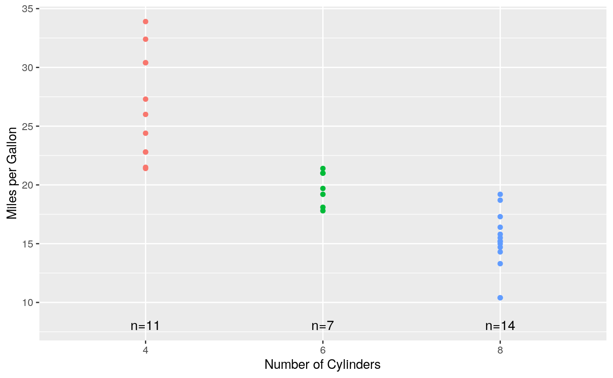
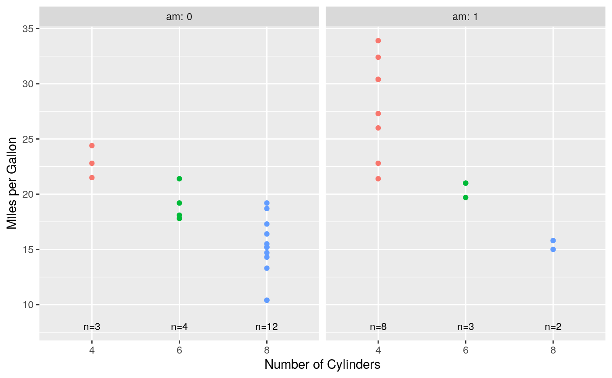
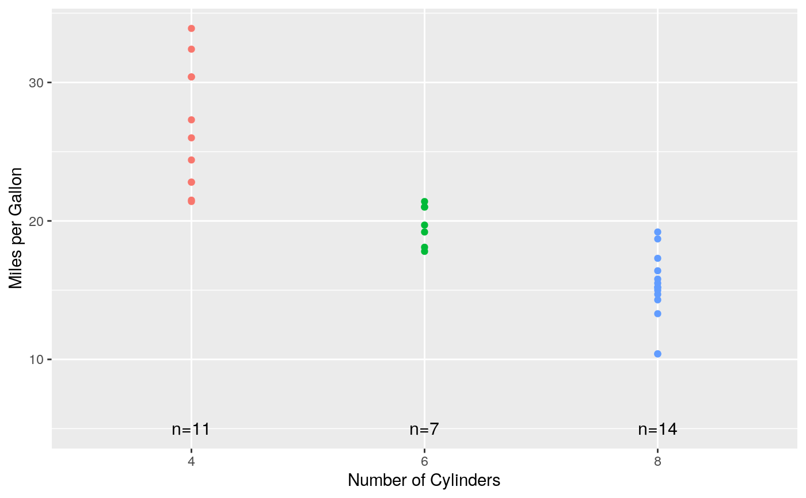
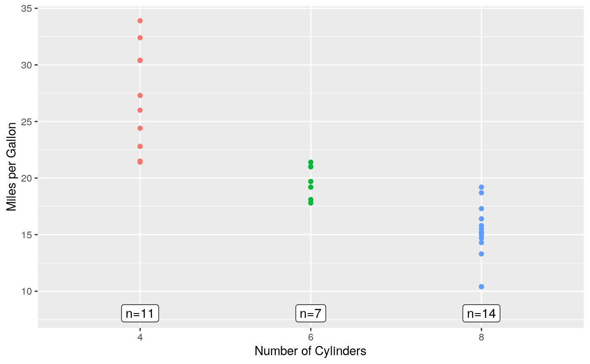
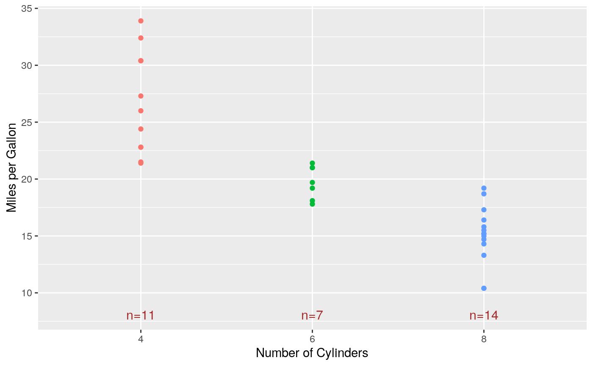
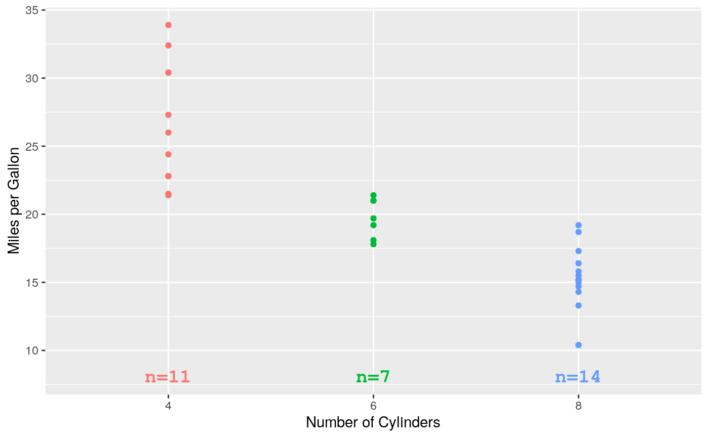
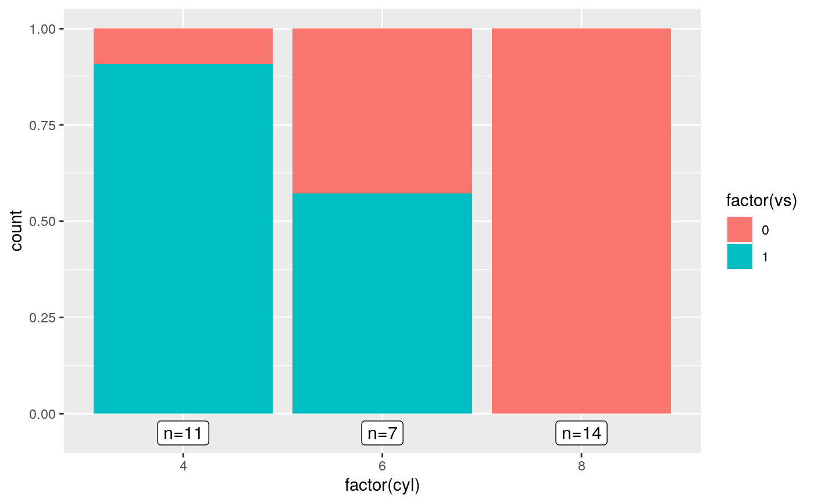

Add Text Indicating the Sample Size to a ggplot2 Plot
stat_n_text.RdFor a strip plot or scatterplot produced using the package
ggplot2 (e.g., with geom_point), for
each value on the \(x\)-axis, add text indicating the number of
\(y\)-values for that particular \(x\)-value.
stat_n_text( mapping = NULL, data = NULL, geom = ifelse(text.box, "label", "text"), position = "identity", na.rm = FALSE, show.legend = FALSE, inherit.aes = TRUE, y.pos = NULL, y.expand.factor = 0.1, text.box = FALSE, alpha = 1, angle = 0, color = "black", family = "", fontface = "plain", hjust = 0.5, label.padding = ggplot2::unit(0.25, "lines"), label.r = ggplot2::unit(0.15, "lines"), label.size = 0.25, lineheight = 1.2, size = 4, vjust = 0.5, ... )
Arguments
| mapping, data, position, na.rm, show.legend, inherit.aes | See the help file
for |
|---|---|
| geom | Character string indicating which |
| y.pos | Numeric scalar indicating the \(y\)-position of the text
(i.e., the value of the argument |
| y.expand.factor | For the case when |
| text.box | Logical scalar indicating whether to surround the text with
a text box (i.e., whether to use |
| alpha, angle, color, family, fontface, hjust, vjust, lineheight, size | See the
help file for |
| label.padding, label.r, label.size | See the help file for
|
| ... | Other arguments passed on to |
Details
See the help file for geom_text for details about how
geom_text and geom_label work.
See the vignette Extending ggplot2 at https://cran.r-project.org/package=ggplot2/vignettes/extending-ggplot2.html for information on how to create a new stat.
References
Wickham, H. (2016). ggplot2: Elegant Graphics for Data Analysis (Use R!). Second Edition. Springer.
See also
Examples
# Using the built-in data frame mtcars, # plot miles per gallon vs. number of cylinders # using different colors for each level of the number of cylinders. p <- ggplot(mtcars, aes(x = factor(cyl), y = mpg, color = factor(cyl))) + theme(legend.position = "none") p + geom_point() + labs(x = "Number of Cylinders", y = "Miles per Gallon")# Now add the sample size for each level of cylinder. p + geom_point() + stat_n_text() + labs(x = "Number of Cylinders", y = "Miles per Gallon")# Repeat Example 1, but: # 1) facet by transmission type, # 2) make the size of the text smaller. p + geom_point() + stat_n_text(size = 3) + facet_wrap(~ am, labeller = label_both) + labs(x = "Number of Cylinders", y = "Miles per Gallon")# Repeat Example 1, but specify the y-position for the text. p + geom_point() + stat_n_text(y.pos = 5) + labs(x = "Number of Cylinders", y = "Miles per Gallon")# Repeat Example 1, but show the sample size in a text box. p + geom_point() + stat_n_text(text.box = TRUE) + labs(x = "Number of Cylinders", y = "Miles per Gallon")# Repeat Example 1, but use the color brown for the text. p + geom_point() + stat_n_text(color = "brown") + labs(x = "Number of Cylinders", y = "Miles per Gallon")# Repeat Example 1, but: # 1) use the same colors for the text that are used for each group, # 2) use the bold monospaced font. mat <- ggplot_build(p)$data[[1]] group <- mat[, "group"] colors <- mat[match(1:max(group), group), "colour"] p + geom_point() + stat_n_text(color = colors, size = 5, family = "mono", fontface = "bold") + labs(x = "Number of Cylinders", y = "Miles per Gallon")# Use it for a barplot - this needs `y.pos` specification since there is no y aesthetic. p <- ggplot(mtcars, aes(x = factor(cyl), fill = factor(vs))) + geom_bar(position = "fill") + stat_n_text(y.pos = -0.05, text.box = TRUE) p